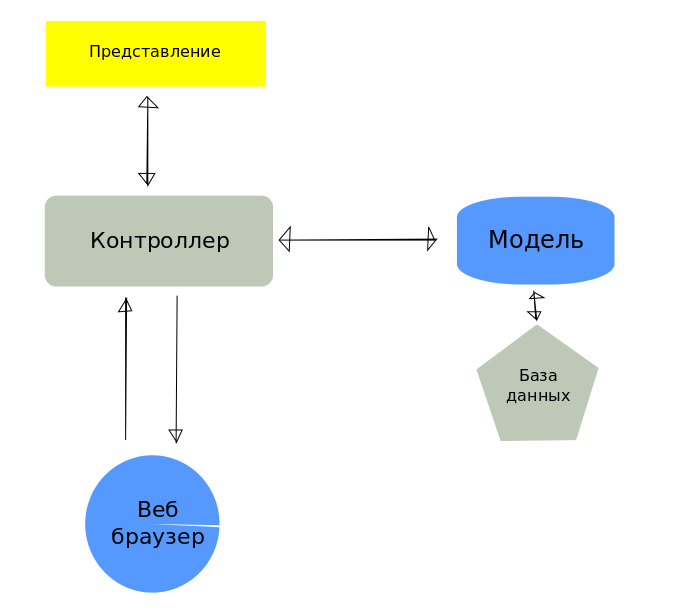

Back-end и фреймворки
На чем писать серверное приложение?
Итак, ранее было сказано, что Веб-приложения состоят из двух взаимодействующих меж собой частей - front-end и back-end. Язык, на котором обрабатываются данные на уровне клиента - это язык, который понимает ваш браузер - JavaScript. На каком же языке работает back-end? На любом языке, который понимает компьютер (в качестве этого языка может использоваться даже JavaScript).
Наиболее известные языки на уровне сервера - PHP (“На нем пол интернета написано”, - фраза, которую часто слышишь от веб программистов. Правда они же утверждают, что это самый худший язык веба. ), С#, Java, Ruby, Python, JavaScript.
back-end фреймворки
Сами понимаете, что писать на голом языке программу, являющуюся веб-приложением медленно и неэффективно. Кроме того, в какой-то момент программа станет настолько большой и сложной, что её трудно будет контролировать. Поэтому, как и в клиентских приложениях, серверные используют фреймворки.
Изучение серверных фреймворков является далеко не тревиальной задачей, зачастую хорошо освоить фреймворк труднее, чем освоить основы языка программирования, на котором он написан.
Следует отметить, что фремворки большое внимание уделяют информационной безопасности, что несомненно является плюсом. У каждого языка обычно несколько фреймворков. Приведем несколько наиболее известных:
- Zend (PHP)
- Yii (PHP)
- ASP.NET MVC
- Django (Python)
- Spirng (Java)
- Ruby on Rails (Ruby)
- Sinatra (Ruby)
Общие сведения о серверных фреймворках на примере Ruby on Rails
Поскольку все фреймворки описать не представляется возможным дадим представление о работе серверных фреймворках на примере Ruby on Rails (RoR).

Как и многие другие, RoR имеет MVC архитектуру, позволяющую отделить мух от котлет. В стандартном шаблоне фреймворка находится около
Модель
Модель предоставляет остальным компонентам приложения объектно-ориентированное отображение данных (таких как каталог продуктов или список заказов). Объекты модели могут осуществлять загрузку и сохранение данных в реляционной базе данных, а также реализуют бизнес-логику.
Представление
Представление создает пользовательский интерфейс с использованием полученных от контроллера данных. Представление также передает запросы пользователя на манипуляцию данными в контроллер (как правило, представление не изменяет непосредственно модель). Представление в больших приложениях, имеющих клиентскую часть, это страничка в формате JSON/XML, а не HTML. Используя данные с этой страницы клиентская программа генерирует HTML в браузере.
Контроллер
Контроллер в Rails — это набор логики, запускаемой после получения HTTP-запроса сервером. Контроллер отвечает за вызов методов модели и запускает формирование представления.
Маршрутизация
Соответствие интернет-адреса с действием контроллера (маршрут) задается в файле config/routes.rb.Там же задается тип запроса.
Схема взаимодействия компонентов MVC
Простой пример
Представим, что существует некоторое приложение, хранящее статьи в интернете. Для простоты назовем статьи контентом. Представим также, что статьи должны выдаваться по адресу имя_вашего_сервера/home/index.json В этом виде их подхватывает клиентское приложение и красиво отображает пользователю
Пример маршрута
В простейшем приложении config/routes.rb может выглядеть так:
Rails.application.routes.draw do
get 'home/index'
root 'home#index'
end
В первой строчке get - тип запроса страницы index, home - имя контроллера, index - имя вьюхи.
Пример контроллера
В файле app/controllers/home_controller.rb находится контроллер, который в методе index собирает в переменную класса home под названием content весь контент из модели Content. Во вьюхе, привязанной к контроллеру эта переменная становится автоматически доступна. respond_to :json означает, что сервер выплевывает вьюху в формате JSON (не HTML!)
class HomeController < ApplicationController
respond_to :json
def index
@content = Content.all
end
end
Пример представления
Соответственно в файле app/views/home/index.json.jbuilder должна находиться вьюха, в которой должно лежать что-то вроде этого:
json.contents @content
Из чего состоит наш контент и откуда мы его берем?
Контент хранится в базе данных, подключенной к RoR через специальный интерфейс Active Record. Для создания таблицы необходимо сгенерировать файл с содержимым, которое нам необходимо хранить в Content. В этом файле также необходимо указать все атрибуты модели и их тип. К примеру можно создать атрибуты рейтинга статьи, заголовка и тела. Дата и время записи создадутся автоматически. При таких атрибутах файл миграции может выглядеть вот так:
class CreateArticles < ActiveRecord::Migration
def change
create_table :contents do |t|
t.string :title
t.text :body
t.timestamps null: false
end
end
end